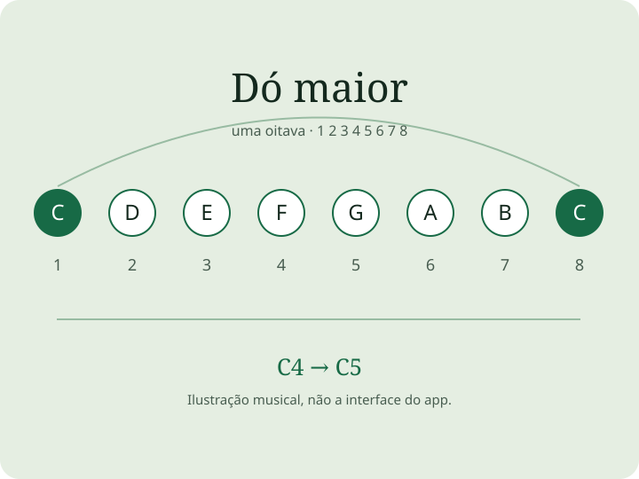

Encontre suas notas
Escolha tonalidade e escala. Compare nomes, graus e intervalos e toque nas notas para ouvir o som.
Para iPhone, iPad e Mac
Encontre uma escala, ouça suas notas e conecte o desenho ao seu instrumento. Uma referência visual prática para guitarra, baixo, piano, ukulele e bandolim.
Conheça na App StoreGuitarra · Baixo · Piano · Ukulele · Bandolim

Ouça o exemplo em dó maior
Áudio ilustrativo sintetizado. Notas: dó4, ré4, mi4, fá4, sol4, lá4, si4, dó5.
Escolha tonalidade e escala. Compare nomes, graus e intervalos e toque nas notas para ouvir o som.
Com Premium, crie afinações e escalas personalizadas, salve setups de estudo e adapte a referência ao instrumento.
Leia uma aula com objetivo claro, ouça o exemplo e depois tente a frase no seu instrumento. Use afinador e metrônomo para se preparar.
Exploração de escalas e acordes, som das notas, afinador cromático e metrônomo. As compras opcionais liberam mais ferramentas e aulas.
Ferramentas avançadas, escalas e afinações personalizadas e catálogo completo de aulas com uma compra permanente. Sem assinatura.
Inclui ferramentas e aulas Premium enquanto ativa, além do Max Daily, sessões completas de percepção musical e Mapa de Maestria. Opções mensal e anual; o plano anual elegível oferece sete dias de teste grátis.
Premium identifica os recursos compartilhados pelo Pro e pela assinatura Max ativa. A App Store mostra preços e elegibilidade para o seu país.
O Pro inclui as ferramentas avançadas e o catálogo de aulas. Max Daily, sessões completas de percepção musical e Mapa de Maestria exigem uma assinatura Max ativa.
O app oferece referências visuais, sons, ferramentas e exercícios. Ouvir a reprodução e responder na tela não certifica sua execução física.
A referência visual oferece guitarra, baixo, piano, ukulele e bandolim. A interface está disponível em inglês, português do Brasil, espanhol, alemão, japonês e chinês simplificado.
Receba ajuda com som, afinações, aulas ou compras. Informe dispositivo, versão do app e o que aconteceu.
Abrir suporte